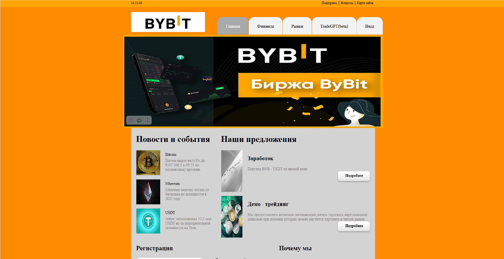

Моя летняя практика в IT
Этим летом я открыл для себя удивительный мир веб-разработки. Всё началось с простого — пустой страницы и пары строк HTML.
Но шаг за шагом сайт оживал: появлялись новые разделы, стильное оформление, кнопки и даже небольшие интерактивные элементы.
CSS помог превратить обычный текст в красивую историю, а JavaScript добавил ту самую «магическую искру», благодаря которой страницы
стали живыми и интересными. Иногда это напоминало строительство замка из песка: всё ещё хрупкое, но уже наполненное вдохновением.
Эта практика показала мне главное — я способен создавать и воплощать идеи в реальность. И это только начало моего пути в IT.

Фото созданного сайта за время практики